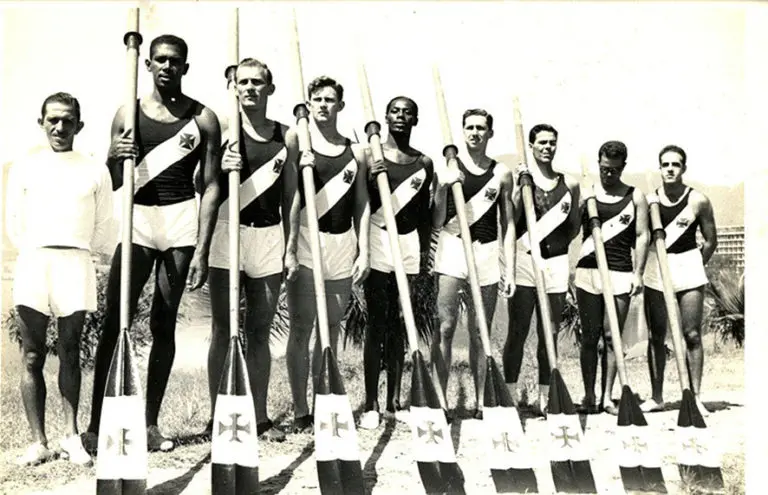
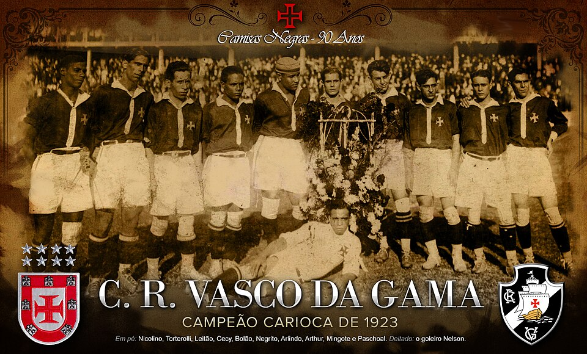
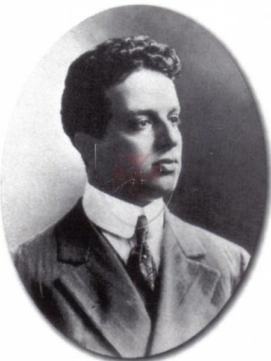
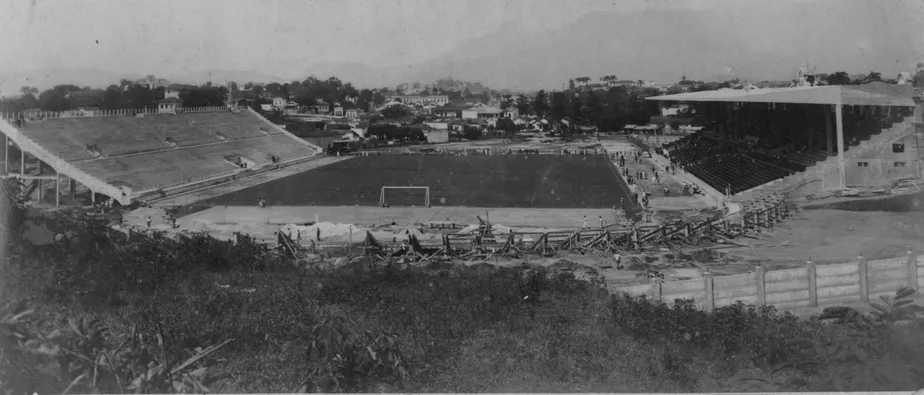
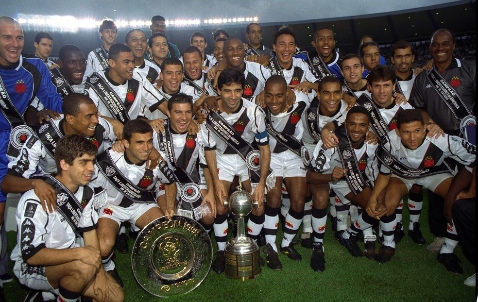

Como tudo começou

O Vasco da Gama foi fundado como clube de remo em 1898, por um grupo de 63 remadores, imigrantes portugueses. A reunião aconteceu no bairro da saúde. O nome escolhido foi de Club de Regatas Vasco da Gama, em homenagem aos 400 anos a viagem do almirante às Índias.
No dia 24 de Novembro de 1905, o clube conquistou o primeiro Campeonato Carioca de Remo. Em sua história no Remo, o Vasco soma mais de 45 títulos estaduais.
Ínico da mais bela história do futebol brasileiro
Em novembro de 1915, o clube de futebol Lusitânia uniu forças com o Vasco, assim dando origem ao departamento de futebol do Vasco da Gama, no início ouve uma oposição de alguns remadores. O gigante da colina estreou no dia 3 de maio de 1916, na terceira divisão. Assim se iniciou uma grande história
Para ser jogador do Vasco, bastava saber jogar futebol. O clube ignorava o racismo da época e incorporava em seu plantel, jogadores de qualquer origem étnica. Em 1922, o Vasco conquistou o seu primeiro título do futebol, ao vencer a Série B da primeira divisão. Com a vitória, o time Cruzmaltino tece acesso garantido à primeira divisão da Liga MEtropolitana de DEsportos Terrestres.
A campanha Vascaína foi impecável, com 11 vitórias, 2 empates e uma derrota, sagrando-se campeão Carioca de futebol no ano de 1923, logo no seu ano de estreia. Era a primeira vez que um time da periferia incomodava os times elitistas da época.

Contra tudo e contra todos
O Vasco da Gama venceu o América e o Fluminense, conquistando o campeonato, em seu ano de estreia na primeira divisão, no dia 12 de Agosto de 1923, deixando o Clube de Regatas Flamengo na segunda colocação. O que acabou marcando significativamente a história do clube, tanto no Rio de Janeiro como no BRasil, como o primeiro Clube em uma campanha com integrantes afrodescendentes, pobres e operários a ser campeões.
Após a tentativa fracassada de ver o Vasco da Gama fora da competição em 1923, os clubes da Zona Sul, Botafogo, Flamengo, Fluminense e alguns outros clubes encontraram a solução para se verem livres dos vascaínos no ano seguinte.
Assim se uniram e abandonaram a Liga Metropolitana de Desportos Terrestres ( LMDT ) e fundaram a Associação MEtropolitana de Esportes Atléticos ( AMEA ). Deixando assim o Vasco da Gama apto para afiliar-se a nova entidade, contando que dispensasse 12 ( doze ) dos ses jogadores, soba a acusação de que teria profissões duvidosas.
Curiosidade: Todos os doze atletas eram negros

No ano de 1924, o presidente do Club de Regatas Vasco da Gama, José Augusto Prestes, enviou uma carta à AMEA, que veio a ser conhecida como " a resposta histórica ".
Recusando-se assim a se submeter à condições impostas e desistindo de filiar-se à AMEA. A carta entrou para a história como amrco da luta contra o racismo no futebol.
Em 21 de Abril de 1927, o Vasco da Gama inaugurou um dos maiores santuários e símbolos de resistência na história do futebol São Januário Em 1929, além do Torneio Inicio, o Vasco ganhava seu terceiro Campeonato Carioca de futebol em 7 anos de elite.

Década de 30
Em 1931, o Vasco se tornou o segundo clube brasileiro a ser convidado para uma excursão internaocional, depois do clube Paulistano. Neste mesmo período, em 1031, Vasco aplicou, o que seria té os dias de hoje, a maior goleada do hoje conhecido como Clássico dos Milhões , 7x0, no Flamengo.
Russinho ( 4 ), Mario Mattos ( 2 ) e Sant`Anna
.
.
.
O Vasco da Gama possui uma história gloriosa, destacando-se com títulos como a Copa Libertadores de 1998, o Campeonato Sul-Americano de Campeões de 1948, e quatro Campeonatos Brasileiros (1974, 1989, 1997, 2000). A trajetória do clube inclui a conquista do primeiro Carioca com o time "Camisas Negras" em 1923 e uma Copa do Brasil em 2011, marcando sua importância no futebol nacional e continental.
Clique na imagem abaixo e confira nosso histórico vitorioso, ao longo dos anos
Palmeiras 3 x 4 Vasco - Mercosul 2000